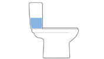
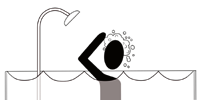
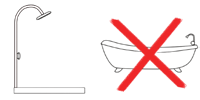
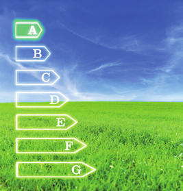

ACCIONES INDIVIDUALES Y COLECTIVAS EN LA GESTIÓN DEL AGUA
El ciclo del agua proporciona agua dulce en los continentes. Aunque se trata de un recurso renovable, es un bien escaso y de difícil acceso para una parte importante de la población.
Para cubrir las necesidades de agua, presentes y futuras, es preciso realizar una gestión sostenible del agua, de modo que su uso no suponga el agotamiento ni el deterioro de las reservas de agua dulce en el futuro. La gestión sostenible del agua se puede llevar a cabo mediante acciones colectivas e individuales.
Acciones colectivas
Desarrollar ordenanzas municipales que favorezcan la reducción del consumo de agua.
Implantar tecnologías de depuración del agua que permitan reutilizar las aguas residuales.
Diseñar políticas que incentiven la sustitución de electrodomésticos antiguos por otros más modernos cuya eficiencia garantice el ahorro de agua.
Acciones individuales
Cambiar los hábitos de consumo, evitando el derroche de agua en la vida diaria.
Reparar de forma inmediata las averías que se produzcan en los hogares.
Incorporar sistemas de ahorro de agua en los dispositivos de consumo.
Podemos ahorrar agua si...

Ilustración de un inodoro

Ícono de ducha

Ducha vs. bañeraFigura de palo comiendo

Señalización direccional en el césped